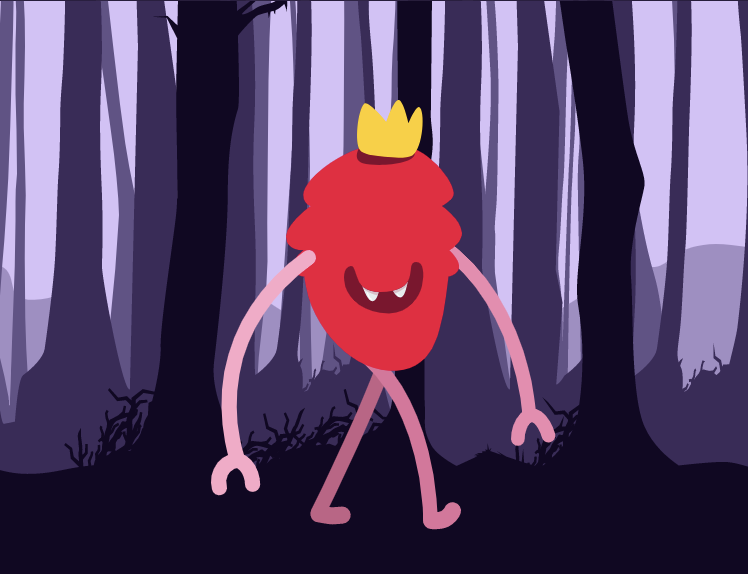

After a year apart from Runwae, the lessons were very simple. Do things
smarter. Prior to my leave I had been to zoomed in for common sense. Looking back at then our operations
seem so basic. One thing I have learned after all this time (not just this year) is that you have to keep
changing. When you’re learning, especially being self taught, you never want to do one thing for long.
* Team Building
* Planning
* Resource Allocation
* We tried to design for the cause. Or for the mission. For the idea.
Not for the human individual user.
* Best Toolset Wins - work smart, not hard
This is a reflective post about our past and an insightful post about our future.
After a dormant year, Runwae is poised for a relaunch. Why did we leave? What to expect? Who’s Runwae? Why
should you care?
Why Did We leave?
Runwae started as, and still is, a project. Not a single Runwae employee is a full time employee.
If you’re familiar with our brand and mission, then you know that Runwae was created and is maintained by a
team of college students spread throughout the country. We’ve built vast ideas with very little resources.
As our team began to turn pages individually and enter new phases like graduation, full time employment, or
simply going deeper into their studies, we decided to take the gas off the breaks a bit. This isn’t the only
reason. We had failed. We had devoted much effort to our growth and in our rookie mindsets, we were not
seeing the results we wanted in the time we wanted to see them. We were exhausted. We needed a break. Runwae
disappeared for some time.
That separation was tough for our team. Founders know the relationship they have with their invention,
whatever it is. You’ve brought something into existence that previously wasn’t. Personally, I couldn’t bring
myself to log onto, much less click on the Runwae profile. For some, it may be the opposite. The urge to
check the status. For me, the reality that I couldn’t control outcome was fearful, the fact that I wasn’t
working to build and grow this child every day brought me extreme guilt. It’s not bringing yourself to speak
to someone you’ve betrayed.
Watching the following count go down didn’t help either.
Though it was uneasy, the separation proved very beneficial for us. This is evident by the values we
returned with. We brought patience, priority, simplicity, identity, and intent.
Some lessons come in the form of a single statement. Don’t touch fire or you will be burned.
Other lessons are much less direct.
Thus, is a central goal of Runwae from the start, to be as self sustaining as possible. Ideally, it should
work with little supervision or intervention,
Team
Previously, the Runwae team was 3-4 people in size at any time. In returning, we decided to recruit more
people to help. About We doubled the size of our team, adding diversity in ability, background, experience,
and thought.
Planning
Our first time around having a customer base and a platform with users, we were just getting our feet wet.
It was trial and error, short sighted in nature. However, the second time around, you bring experience to
the table. You have an idea of what works and doesn’t, what’s important and what isn’t. With those
resources, you can. Now execute plans beyond trial and error. You create master plans, where completion of
step 1 permits step 2, and step 5 is dependent on the completion of step 1. Though such planning suffers
from risk and complexity, it has the benefit of coordination and simultaneity. Two people pushing a truck
can push it much farther than any one can no matter how long he spends. Five smaller, well placed holes can
bring a wall down that one bigger drill cannot. There is also a timing element that comes into play. The
language of execution is extended.
Strategy
Brand Clarity
Runwae only got into apparel to show appreciation for and spread awareness to the potential users of the
Runwae platform. Our first order of business was to send out care packages to influencers that we admired.
The package mainly included apparel samples custom made to that person’s identity (lower in quality as we
were just learning), along with some accessories and information about the Runwae.
As a result of these efforts, we saw an overwhelming response from the recipients. This response, coupled
with our joy for the creation process, led us to pursue apparel design and creation in a more broad sense,
while maintaining our target market and missions.
As apparel made the more engaging , interesting, and artistic imagery, this constituted the bulk of our
intstagram content. We witnessed confusion as we began to grow this aspect of our brand. Many people though
of Runwae as an apparel brand.
In order to create clarity for the different sectors of Runwae, we decided to create individual identities,
while we continue to leverage the apparel to grow the platform and vice versa, as they both exist to serve
influencers.
Catalog
In returning, we shifted our strategy to focus efforts. Instead creating a wide variety of clothing with
different designs and color ways, we decided to narrow it down o a few.
This had a few effects.
1.While options are usually a good thing, it well known that too many can put pressure on decision making.
2. We also felt that it was watering down our brand, blocking one concise message from getting through.
3. A wider selection places more requirements on the process of managing inventory, making the actual
apparel (done in-house), and
Quality
Stepping up the quality of our apparel required a time investment, much like making our content in house. We
had to become familiar with process, machines and capabilities, thread quality, and digitization.
With sufficient training, we were able to create embroidered designs in house with reliability. We then
ordered in high quality products in order justify a higher price point and increase margins.
Content
In an age where most advertisement is done on the web and your store front is your social media account, it
becomes increasingly important to have unique, quality, content that reflects the values of your brand. In
order to meet this requirement, we began to train ourselves. We purchased adobe licenses and completed
trainings.
Head over to Runwae.com to see it in action
Content you’d like to see, what we can do better, email
Here are 12 photography portfolio templates you can use with Webflow to create your own personal platform for showing off your work.